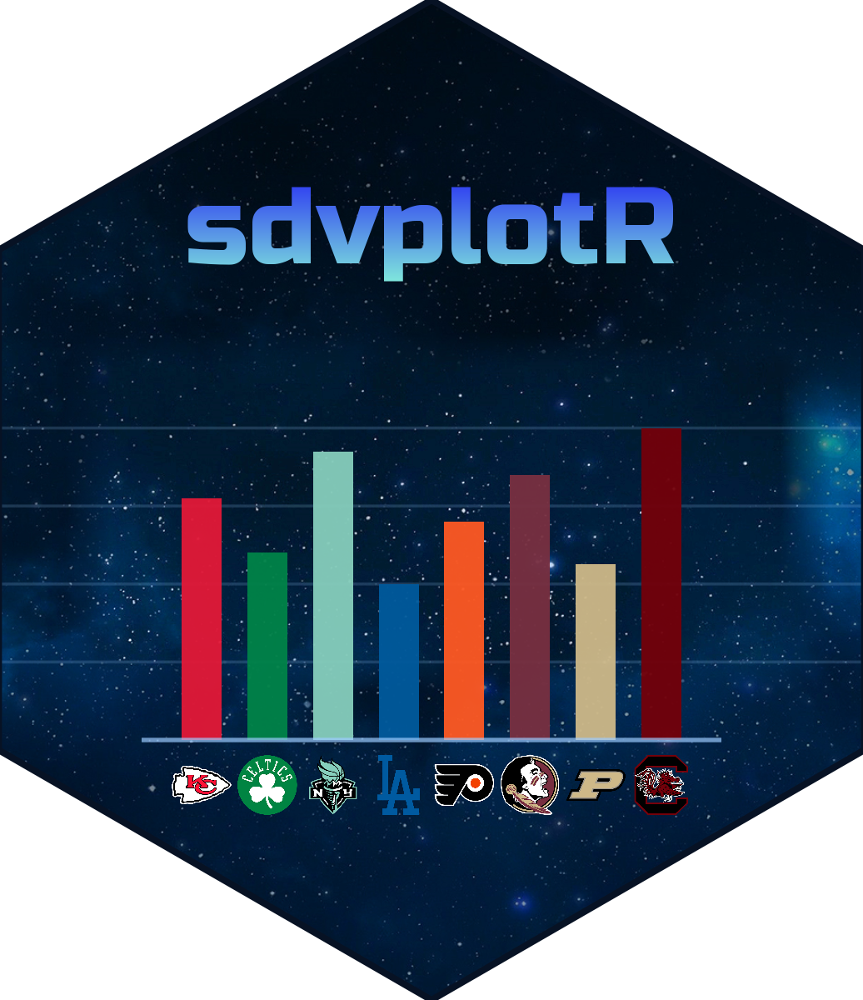
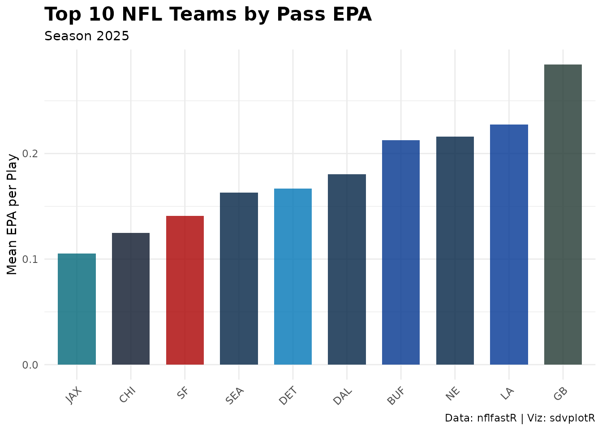
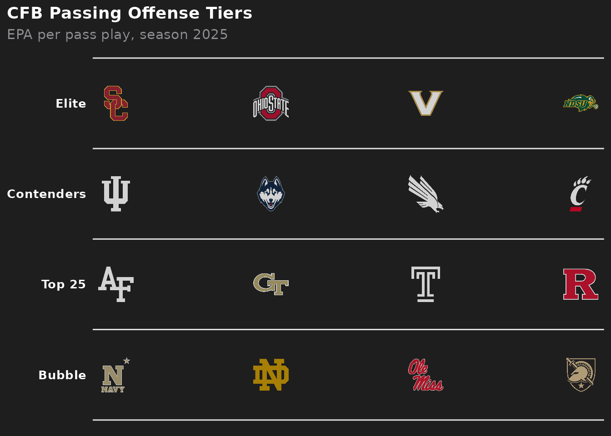
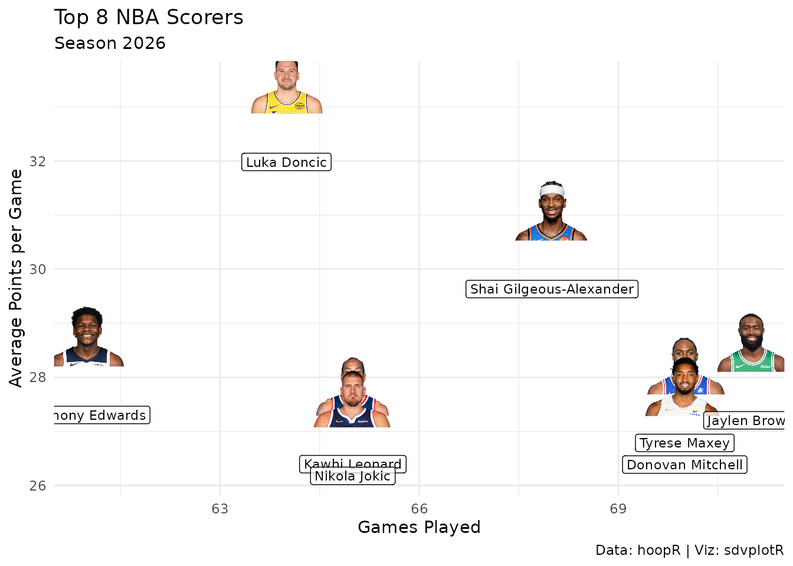
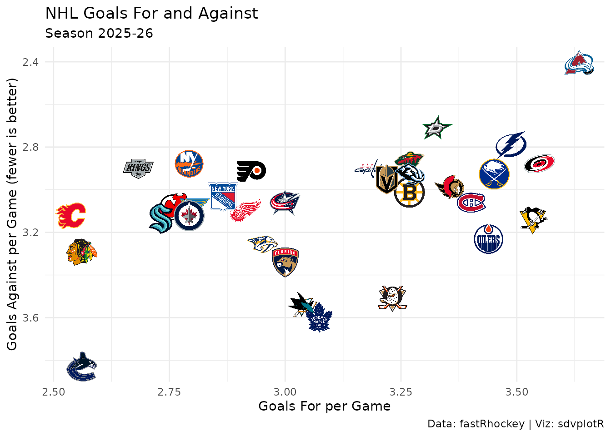
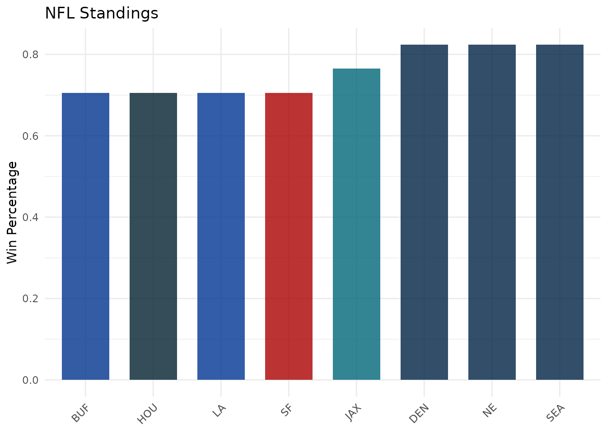

End-to-End Workflows with sdvplotR and the SportsDataverse Ecosystem
Source:vignettes/articles/workflows.Rmd
workflows.RmdOn this page
Introduction
This article demonstrates end-to-end workflows for ingesting data from SportsDataverse packages, creating visualizations with sdvplotR, and exporting results. Each workflow loads real data, processes it, draws it and saves it. We’ll cover common patterns for data engineering, visualization, and reporting.
Setup
library(sdvplotR)
library(ggplot2)
library(dplyr)
library(gt)
# Companion packages, called with pkg:: below:
# nflfastR / nflreadr (NFL), cfbfastR + cfbseedR (CFB), hoopR (NBA, MBB),
# wehoop (WNBA, WBB), baseballr (MLB), fastRhockey (NHL), oddsapiR (odds)
# Exports go to a temporary directory; point this at your own folder
out_dir <- tempdir()Workflow 1: NFL Weekly Recap
Complete workflow for creating an NFL passing recap:
# Step 1: Load data with nflfastR, for the last completed regular season (NFL
# seasons are named for the year they start and end in early January)
season <- as.integer(format(Sys.Date(), "%Y")) - 1 -
(format(Sys.Date(), "%m-%d") < "01-15")
pbp <- nflfastR::load_pbp(seasons = season, file_type = "rds")
# Step 2: Process data
team_epa <- pbp |>
filter(pass == 1, !is.na(epa), !is.na(posteam)) |>
group_by(posteam) |>
summarise(
mean_epa = mean(epa, na.rm = TRUE),
n_plays = n(),
.groups = "drop"
) |>
filter(n_plays >= 100) |>
slice_max(mean_epa, n = 10, with_ties = FALSE)
# Step 3: Create visualization
plot <- ggplot(team_epa, aes(x = reorder(posteam, mean_epa), y = mean_epa)) +
geom_col(aes(fill = posteam), width = 0.7) +
scale_fill_sdv(sport = "nfl", alpha = 0.8) +
labs(
title = "Top 10 NFL Teams by Pass EPA",
subtitle = paste("Season", season),
x = NULL,
y = "Mean EPA per Play",
caption = "Data: nflfastR | Viz: sdvplotR"
) +
theme_minimal() +
theme(
axis.text.x = element_text(angle = 45, hjust = 1),
legend.position = "none",
plot.title = element_text(face = "bold", size = 16)
)
# Step 4: Export
ggsave(file.path(out_dir, "nfl_weekly_recap.png"),
plot = plot, width = 12, height = 8, dpi = 300)
plot
Workflow 2: CFB Power Rankings
Complete workflow for CFB tiers from passing efficiency:
# Step 1: Load data with cfbfastR, for the last completed regular season (named
# for the year it starts; it ends in mid-December)
cfb_season <- as.integer(format(Sys.Date(), "%Y")) -
(format(Sys.Date(), "%m-%d") < "12-15")
cfb_pbp <- cfbfastR::load_cfb_pbp(seasons = cfb_season)
# Step 2: Process data: EPA per pass play; clean_team_abbrs() turns school
# names into sdvplotR's abbreviations
team_perf <- cfb_pbp |>
filter(pass == 1, !is.na(EPA), !is.na(pos_team)) |>
mutate(team = clean_team_abbrs(pos_team, sport = "cfb")) |>
# FBS offenses only: the play-by-play also covers FCS games
filter(team %in% team_reference("cfb")$team_abbr[team_reference("cfb")$division == "FBS"]) |>
group_by(team) |>
summarise(mean_epa = mean(EPA), n_plays = n(), .groups = "drop") |>
filter(n_plays >= 100) |>
slice_max(mean_epa, n = 16, with_ties = FALSE)
# Step 3: Create tier plot (four tiers of four)
tier_data <- team_perf |>
mutate(tier_no = rep(1:4, each = 4)[seq_len(n())]) |>
select(tier_no, team)
tier_plot <- sdv_team_tiers(
tier_data,
sport = "cfb",
title = "CFB Passing Offense Tiers",
subtitle = paste("EPA per pass play, season", cfb_season),
tier_desc = c(
"1" = "Elite",
"2" = "Contenders",
"3" = "Top 25",
"4" = "Bubble"
)
)
# Step 4: Export
ggsave(file.path(out_dir, "cfb_power_rankings.png"),
plot = tier_plot, width = 14, height = 10, dpi = 300)
tier_plot
Workflow 3: NBA Player Comparison
Complete workflow for comparing NBA scorers:
# Step 1: Load data with hoopR (ESPN player box scores) for the last completed
# regular season (hoopR names a season for the year it ends, in mid-April)
nba_season <- as.integer(format(Sys.Date(), "%Y")) -
(format(Sys.Date(), "%m-%d") < "04-20")
# ESPN tags the All-Star games as regular season too; keeping the league's own
# teams drops them
nba_box <- hoopR::load_nba_player_box(seasons = nba_season) |>
filter(season_type == 2, !did_not_play, team_abbreviation %in% team_reference("nba")$team_abbr)
# Step 2: Process data
# one row per player: a player traded mid-season has box scores for two teams
top_players <- nba_box |>
group_by(athlete_id, athlete_display_name) |>
summarise(
avg_points = mean(points, na.rm = TRUE),
games = n(),
.groups = "drop"
) |>
filter(games >= 20) |>
slice_max(avg_points, n = 8, with_ties = FALSE)
# Step 3: Create visualization (athlete_id is an ESPN athlete ID, the default)
player_plot <- ggplot(top_players, aes(x = games, y = avg_points)) +
geom_sdv_headshots(
aes(player_id = athlete_id),
sport = "nba",
height = 0.15
) +
geom_label(
aes(label = athlete_display_name),
nudge_y = -1.5,
size = 3,
alpha = 0.7
) +
labs(
title = "Top 8 NBA Scorers",
subtitle = paste("Season", nba_season),
x = "Games Played",
y = "Average Points per Game",
caption = "Data: hoopR | Viz: sdvplotR"
) +
theme_minimal()
# Step 4: Export
ggsave(file.path(out_dir, "nba_top_scorers.png"),
plot = player_plot, width = 12, height = 8, dpi = 300)
player_plot
Workflow 4: MLB Standings Dashboard
Complete workflow for MLB standings:
# Step 1: Load data with baseballr (MLB Stats API; one string for both
# leagues, because mlb_standings() rejects a vector)
# the last completed regular season (it ends around October 1)
mlb_season <- as.integer(format(Sys.Date(), "%Y")) -
(format(Sys.Date(), "%m-%d") < "10-05")
teams <- baseballr::mlb_teams(season = mlb_season, sport_ids = 1) |>
select(team_id, team_abbreviation, team_name = team_full_name)
# Step 2: Process data
standings <- baseballr::mlb_standings(season = mlb_season, league_id = "103,104") |>
transmute(
team_id = team_records_team_id,
wins = team_records_wins,
losses = team_records_losses,
win_pct = as.numeric(team_records_winning_percentage)
) |>
inner_join(teams, by = "team_id") |>
slice_max(win_pct, n = 15, with_ties = FALSE) |>
mutate(rank = row_number(), logo = team_abbreviation) |>
select(rank, logo, team_name, wins, losses, win_pct)Steps 1 and 2 are not run when this site is built, because the MLB
Stats API is not called there; the rest of this workflow uses a snapshot
of standings taken on October 05, 2026 (baseballr
2.0.0).
# Step 3: Create gt table
standings_table <- standings |>
gt() |>
gt_sdv_logos(columns = "logo", sport = "mlb", height = 35) |>
fmt_number(columns = "win_pct", decimals = 3) |>
cols_label(
rank = "#",
logo = "",
team_name = "Team",
wins = "W",
losses = "L",
win_pct = "Pct"
) |>
tab_header(
title = "MLB Top 15",
subtitle = paste("Season", mlb_season)
)
# Step 4: Export to HTML
gtsave(standings_table, file.path(out_dir, "mlb_standings.html"))
standings_table| MLB Top 15 | |||||
| Season 2026 | |||||
| # | Team | W | L | Pct | |
|---|---|---|---|---|---|
| 1 |  |
Milwaukee Brewers | 103 | 59 | 0.636 |
| 2 |  |
Los Angeles Dodgers | 100 | 62 | 0.617 |
| 3 |  |
Tampa Bay Rays | 98 | 64 | 0.605 |
| 4 |  |
Atlanta Braves | 94 | 68 | 0.580 |
| 5 |  |
New York Yankees | 93 | 68 | 0.578 |
| 6 |  |
San Diego Padres | 91 | 71 | 0.562 |
| 7 |  |
Chicago Cubs | 89 | 73 | 0.549 |
| 8 |  |
Philadelphia Phillies | 88 | 74 | 0.543 |
| 9 |  |
Boston Red Sox | 87 | 75 | 0.537 |
| 10 |  |
Arizona Diamondbacks | 86 | 76 | 0.531 |
| 11 |  |
Cleveland Guardians | 85 | 77 | 0.525 |
| 12 |  |
Chicago White Sox | 84 | 78 | 0.519 |
| 13 |  |
Pittsburgh Pirates | 82 | 80 | 0.506 |
| 14 |  |
Houston Astros | 81 | 81 | 0.500 |
| 15 |  |
Texas Rangers | 80 | 82 | 0.494 |
Workflow 5: NHL Team Performance
Complete workflow for NHL team analysis:
# Step 1: Load data with fastRhockey for the last completed regular season
# (named for the year it ends; the regular season ends in mid-April)
nhl_season <- as.integer(format(Sys.Date(), "%Y")) -
(format(Sys.Date(), "%m-%d") < "04-20")
nhl_teams <- fastRhockey::nhl_stats_teams(season = paste0(nhl_season - 1, nhl_season))Step 1 is not run when this site is built, because the NHL Stats API
is not called there; the rest of this workflow uses a snapshot of
nhl_teams taken on October 04, 2026 (fastRhockey
1.0.0).
# Step 2: Process data: the NHL's full team names become abbreviations
team_perf <- nhl_teams |>
mutate(team = clean_team_abbrs(team_full_name, sport = "nhl"))
# Step 3: Create visualization
nhl_plot <- ggplot(team_perf, aes(x = goals_for_per_game, y = goals_against_per_game)) +
geom_sdv_logos(
aes(team = team),
sport = "nhl",
width = 0.06
) +
scale_y_reverse() +
labs(
title = "NHL Goals For and Against",
subtitle = paste0("Season ", nhl_season - 1, "-", substr(nhl_season, 3, 4)),
x = "Goals For per Game",
y = "Goals Against per Game (fewer is better)",
caption = "Data: fastRhockey | Viz: sdvplotR"
) +
theme_minimal()
# Step 4: Export
ggsave(file.path(out_dir, "nhl_team_performance.png"),
plot = nhl_plot, width = 12, height = 8, dpi = 300)
nhl_plot
Workflow 6: Betting Odds Integration
Combine standings with betting lines from oddsapiR, which reads
The Odds API and needs a free key from https://the-odds-api.com. Set it for the session with
Sys.setenv(ODDS_API_KEY = "YOUR-API-KEY-HERE"), or add
ODDS_API_KEY=YOUR-API-KEY-HERE to ~/.Renviron
to keep it. Without a key the table below shows records only:
# Step 1: Load data: regular-season records from nflreadr's schedules
nfl_standings <- nflreadr::load_schedules(season) |>
filter(game_type == "REG", !is.na(result)) |>
nflreadr::clean_homeaway() |>
group_by(team) |>
summarise(
wins = sum(team_score > opponent_score),
win_pct = mean(team_score > opponent_score) + 0.5 * mean(team_score == opponent_score),
.groups = "drop"
) |>
slice_max(win_pct, n = 8, with_ties = FALSE)
# Step 2: Merge upcoming spreads when a key is set and the API answers (a spent
# quota or an outage leaves the records-only table); odds name teams in full,
# and clean_team_abbrs() maps full names to abbreviations
odds <- if (nzchar(Sys.getenv("ODDS_API_KEY"))) {
tryCatch(
oddsapiR::toa_sports_odds(sport_key = "americanfootball_nfl", markets = "spreads"),
error = function(e) NULL
)
}
if (NROW(odds) > 0) {
spreads <- odds |>
mutate(team = clean_team_abbrs(outcomes_name, sport = "nfl")) |>
group_by(team) |>
summarise(Spread = median(outcomes_point, na.rm = TRUE), .groups = "drop")
nfl_standings <- left_join(nfl_standings, spreads, by = "team")
}
# Step 3: Create the table
odds_table <- nfl_standings |>
mutate(logo = team, .before = 1) |>
gt() |>
gt_sdv_logos(columns = "logo", sport = "nfl", height = 35) |>
fmt_number(columns = "win_pct", decimals = 3) |>
sub_missing(missing_text = "") |>
cols_label(logo = "", team = "Team", wins = "Wins", win_pct = "Win %") |>
tab_header(
title = "NFL Standings with Betting Lines",
subtitle = paste("Season", season)
)
# Step 4: Export
gtsave(odds_table, file.path(out_dir, "nfl_standings_odds.html"))
odds_table| NFL Standings with Betting Lines | ||||
| Season 2025 | ||||
| Team | Wins | Win % | Spread | |
|---|---|---|---|---|
 |
DEN | 14 | 0.824 | -3.5 |
 |
NE | 14 | 0.824 | -3.5 |
 |
SEA | 14 | 0.824 | -3.0 |
 |
JAX | 13 | 0.765 | -6.5 |
 |
BUF | 12 | 0.706 | 3.0 |
 |
HOU | 12 | 0.706 | -7.0 |
 |
LA | 12 | 0.706 | -3.0 |
 |
SF | 12 | 0.706 | 3.0 |
Workflow 7: Automated Reporting Pipeline
Wrap the draw-and-export steps in a function that takes any sport’s standings, so one pipeline serves every league:
generate_standings_report <- function(standings, sport, out_dir = tempdir()) {
message("Generating ", toupper(sport), " standings report...")
standings <- standings |>
arrange(desc(win_pct)) |>
mutate(rank = row_number(), logo = team)
plot <- ggplot(standings, aes(x = reorder(team, win_pct), y = win_pct)) +
geom_col(aes(fill = team), width = 0.7) +
scale_fill_sdv(sport = sport, alpha = 0.8) +
labs(title = paste(toupper(sport), "Standings"), x = NULL, y = "Win Percentage") +
theme_minimal() +
theme(
axis.text.x = element_text(angle = 45, hjust = 1),
legend.position = "none"
)
table <- standings |>
select(rank, logo, team, win_pct) |>
gt() |>
gt_sdv_logos(columns = "logo", sport = sport, height = 30) |>
fmt_number(columns = "win_pct", decimals = 3)
# Include a timestamp in exported files
stamp <- format(Sys.time(), "%Y%m%d_%H%M%S")
ggsave(file.path(out_dir, paste0(sport, "_standings_", stamp, ".png")),
plot = plot, width = 12, height = 8, dpi = 300)
gtsave(table, file.path(out_dir, paste0(sport, "_standings_", stamp, ".html")))
message("Report generated: ", stamp)
list(plot = plot, table = table)
}
# The same function for two leagues
nfl_report <- generate_standings_report(select(nfl_standings, team, win_pct), "nfl")
mlb_report <- generate_standings_report(
transmute(standings, team = logo, win_pct),
"mlb"
)
nfl_report$plot
Workflow 8: Multi-Sport Comparison
Collect each league’s best record into one table:
nba_best <- hoopR::load_nba_standings(seasons = nba_season) |>
filter(stat_name == "winPercent") |>
slice_max(value, n = 1, with_ties = FALSE)
multi_sport_comparison <- bind_rows(
nfl_standings |> slice_max(win_pct, n = 1, with_ties = FALSE) |>
transmute(sport = "NFL", top_team = team, win_pct),
nba_best |> transmute(sport = "NBA", top_team = team_abbreviation, win_pct = value),
standings |> slice_max(win_pct, n = 1, with_ties = FALSE) |>
transmute(sport = "MLB", top_team = logo, win_pct),
team_perf |> slice_max(point_pct, n = 1, with_ties = FALSE) |>
transmute(sport = "NHL (points %)", top_team = team, win_pct = point_pct)
)
comparison_table <- multi_sport_comparison |>
gt() |>
fmt_number(columns = "win_pct", decimals = 3) |>
cols_label(
sport = "Sport",
top_team = "Top Team",
win_pct = "Win %"
) |>
tab_header(
title = "Multi-Sport Leaderboard",
subtitle = "The best record in each league's latest season"
) |>
tab_footnote(
footnote = "Data: SportsDataverse packages | Viz: sdvplotR",
locations = cells_title(groups = "title")
)
comparison_table| Multi-Sport Leaderboard1 | ||
| The best record in each league's latest season | ||
| Sport | Top Team | Win % |
|---|---|---|
| NFL | DEN | 0.824 |
| NBA | OKC | 0.780 |
| MLB | MIL | 0.636 |
| NHL (points %) | COL | 0.738 |
| 1 Data: SportsDataverse packages | Viz: sdvplotR | ||
Best Practices for Workflows
Modularize Code: Break workflows into reusable functions
Use Parameters: Make workflows flexible with function parameters
Error Handling: Add error handling for data loading and processing
Logging: Use
message()orcli::cli_alert_*()to track progressVersioning: Include timestamps in exported files
Automation: Use cron jobs or GitHub Actions for scheduled runs
Documentation: Document each workflow step with comments
Scheduling Automated Reports
Use cron or GitHub Actions for automated reporting:
# Example: GitHub Actions workflow
# .github/workflows/weekly_report.yml
# name: Weekly Sports Report
# on:
# schedule:
# - cron: '0 12 * * 1' # Every Monday at noon
# workflow_dispatch:
# jobs:
# generate-report:
# runs-on: ubuntu-latest
# steps:
# - uses: actions/checkout@v5
# - uses: r-lib/actions/setup-r@v2
# - name: Install packages
# run: Rscript -e "install.packages(c('sdvplotR', 'nflfastR', 'gt'))"
# - name: Generate report
# run: Rscript scripts/weekly_report.R
# - name: Upload artifacts
# uses: actions/upload-artifact@v4
# with:
# name: weekly-reports
# path: reports/